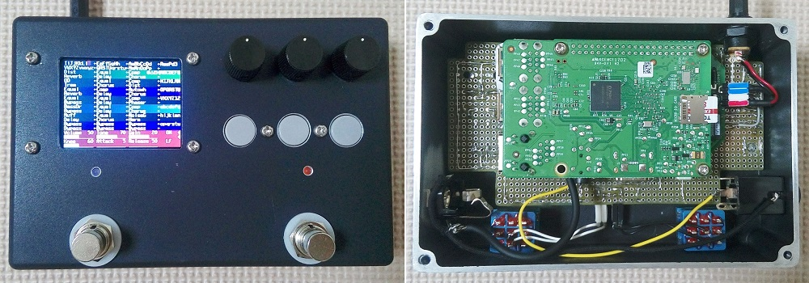

RasPd3 ハードウェア編
2018年05月24日 カテゴリー：Raspberry Pi エフェクター

今まで製作したRaspberry Pi搭載エフェクター（RasPd1、RasPd2、RasPd4）は単一エフェクトのみしか使えませんでしたが、今回のRasPd3は複数のエフェクトを同時に使えてパッチ切替もできる、いわゆるマルチエフェクターを想定したものです。当初はオーディオインターフェースにCS4272を使うつもりでした（別記事参照）が、うまくいかずWM8731を使っています。しかしながらCS4272を使ったオーディオカードTeensy Super Audio Board（SAB）は全データが公開されているので、大いに参考にしました。
▽回路図
ΔΣ型ADコンバータでは入力のフィルタは簡易なものでよいらしいので、RasPd4より簡略化しました。ギター入力はモノラルですが、WM8731のLR入力を逆位相にして内部プログラム（下図）で足し合わせるという差動入力っぽいことをしています。
ノイズ対策として、絶縁型DC-DCコンバータやデジタルアイソレータ（Si8662BB、Si8602AB）を用いてRaspberry PiとGNDを分離しました。スイッチについてはチャタリング対策の抵抗とコンデンサを入れています。ロータリーエンコーダは高速回転させるかもしれないので、コンデンサの容量が少なめです。
2.2インチLCDディスプレイモジュールはAmazonで購入しました。SAINSMARTの商品ページのManualに回路図が入っています。回路図中に3.3Vと記載がありますが、実際は3.0Vのレギュレータが使われていました。LEDピンへ抵抗を挿入すると明るさが減り、消費電力を抑えられます。Raspberry Piでの使用方法についてはadafruitのILI9341 TFT display用ページの内容で問題ありませんでした。
▽レイアウト（KiCadのデータはこちらへ）
WM8731のアナログGNDとデジタルGNDは分離せず、裏面のベタGNDができるだけ一面プレーンになるようにしています。スイッチ類の基板はユニバーサル基板で作成しており、細い線がジャンパーです。ディスプレイモジュールのSDカードソケットは配線の邪魔なので取り外しました。ケースはタカチTD10-15-4Bです。
ノイズについては、劇的ではないですが少しは減少したようです。入力が0.5Vrmsぐらいで歪率1%となりますが、ブースターとして使うことはないので大丈夫でしょう。内部プログラムについてはまだ全然できていません。今までにない規模のプログラミングとなるので、相当時間がかかると思われます。